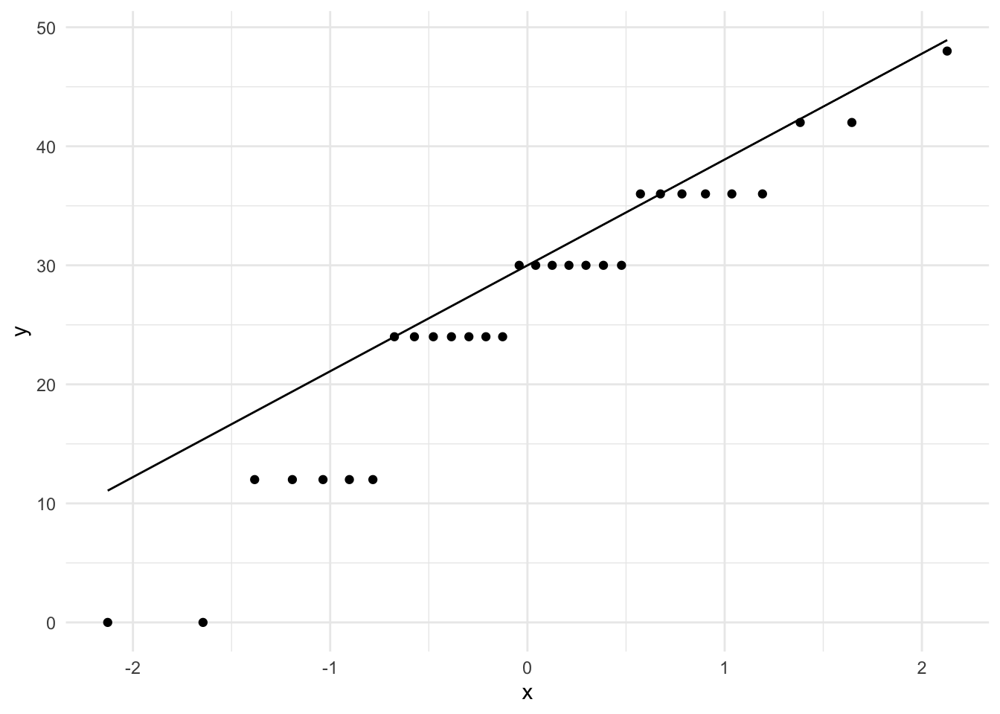
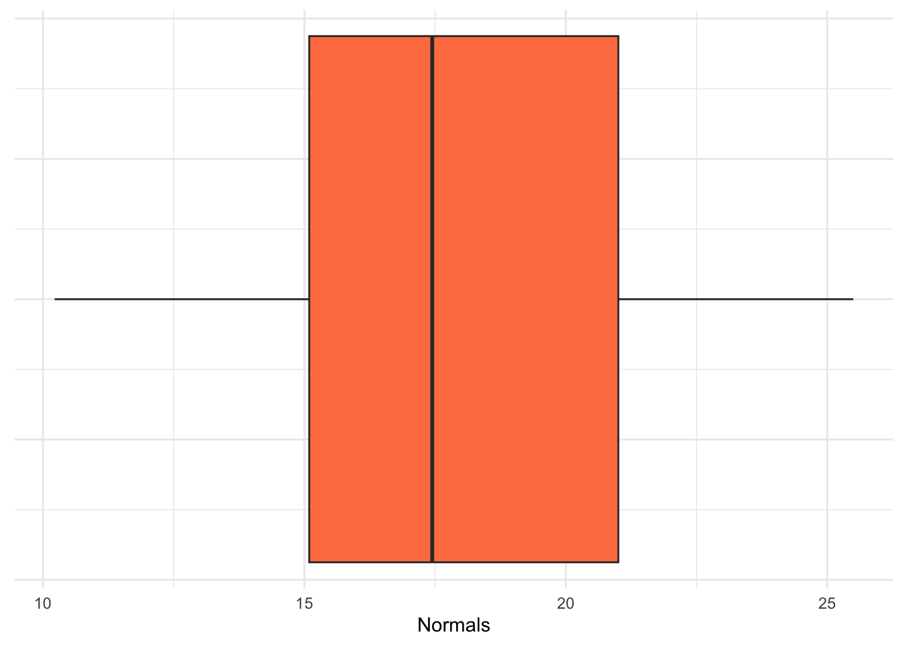
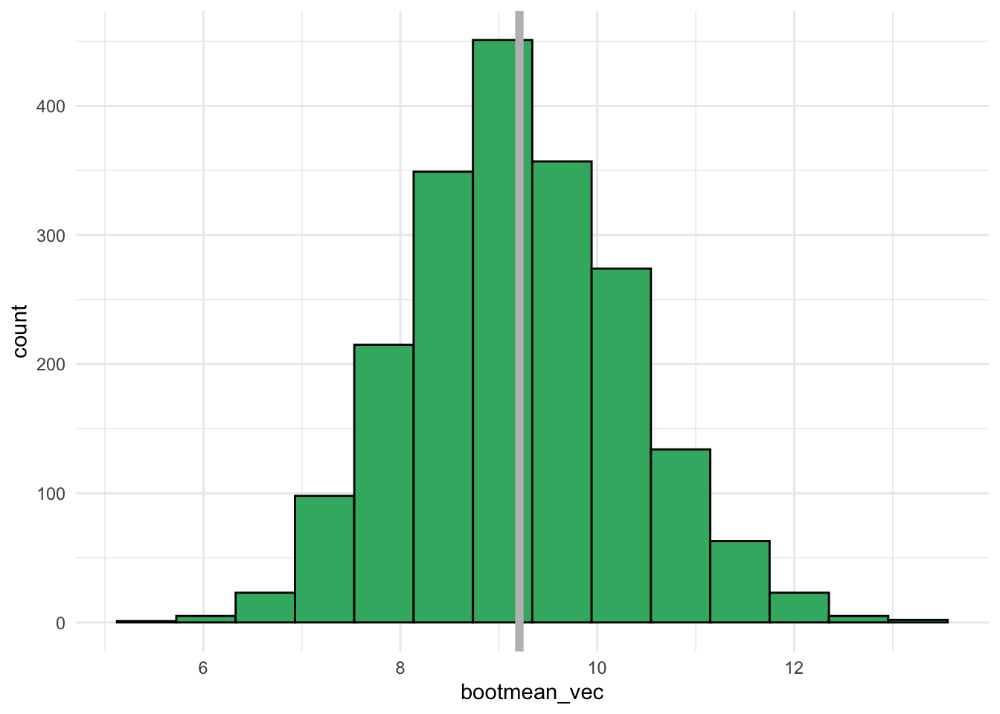

library(tidyverse)
library(resampledata)
## convert Beerwings data frame to a tibble for nicer printing
beerwings_df <- Beerwings |> as_tibble()
beerwings_df3 Confidence Intervals
Goals:
Construct basic plots of data and basic summary statistics of data.
Describe what “confidence” really means.
Use bootstrapping to construct confidence intervals for particular parameters of interest.
Lab 3.1: A Tiny, Tiny, Tiny Glimpse into DATA/STAT 234
This first subsection is a little disconnected from what we have discussing in class, but the purpose of having this section in this class is to give you some practice constructing basic graphs and obtaining basic summary statistics with DATA/STAT 234-style code. The reason we have this subsection here is so that you can make these graphs to investigate various assumptions of the confidence intervals and hypothesis tests we will discuss in the latter part of the semester.
Plotting
If we are not using the Central Limit Theorem to obtain the (approximate) sampling distribution of the sample mean, we must plot the data to determine if it could have plausibly come from a Normal population (looking for rough symmetric and absence of outliers). While we have lots of options here (including histograms and normal quantile plots), I like a boxplot, especially in two sample situations.
For this illustration, we’ll use the Beerwings dataset from the textbook to show how to make plots of a single quantitative variable.
Let’s first consider the data as a single sample and explore the distributions of both Beer consumption and Hotwing consumption (only the beer consumption plots are printed below):
ggplot(data = beerwings_df, aes(x = Beer)) +
geom_histogram(bins = 8, colour = "black", fill = "mediumseagreen") +
theme_minimal()ggplot(data = beerwings_df, aes(x = Beer)) +
geom_boxplot(fill = "mediumseagreen") +
theme_minimal()ggplot(data = beerwings_df, aes(sample = Beer)) +
stat_qq() +
stat_qq_line() +
theme_minimal()
ggplot(data = beerwings_df, aes(x = Hotwings)) +
geom_histogram(bins = 8, colour = "black", fill = "mediumseagreen") +
theme_minimal()ggplot(data = beerwings_df, aes(x = Hotwings)) +
geom_boxplot(fill = "mediumseagreen") +
theme_minimal()ggplot(data = beerwings_df, aes(sample = Hotwings)) +
stat_qq() +
stat_qq_line() +
theme_minimal()Now, let’s compare the distribution of hotwings for each sex in the data set with a set of side-by-side boxplots:
ggplot(data = beerwings_df, aes(x = Gender, y = Hotwings)) +
geom_boxplot(fill = "steelblue") +
theme_minimal()Data Summarisation and Creation
Now, let’s examine how we can look at some summary statistics of the Hotwings variable in the beerwings_df data. For one sample, we can just use the summarise() function with whatever summary metrics we want to compute:
If we want to compare summary statistics for each level of a categorical variable, we can first group_by() that variable:
Finally, though this is not a data summary function, we can use filter() if we want to keep only certain rows in the data set. For example, if we want to get rid of any people who did not consume any Beer, we can use:
beerwings_onlybeer <- beerwings_df |> filter(Beer > 0)Exercise. The Girls2004 data is also in the resample R package, containing data on 80 newborn girls born in the state of Wyoming. Construct a set of side-by-side boxplots that explore the association between whether or not the mother was a Smoker (Smoker) with the Weight variable.
girls2004_df <- Girls2004 |> as_tibble() Exercise. Again with the Wyoming girls data, obtain grouped summary statistics on Weight for girls in each Smoker group, including the mean weight, standard deviation of weight, and the number of girls in each Smoker group.
Creating a Data Set with tibble()
Suppose we need to enter our own data into R. As long as the sample size is relatively small (small enough that you can type things in manually without it being too much of a pain), we can create a data frame object using the tibble() function. For example, on the Stat 113 First Day survey, we ask students how long (in hours) it takes them to travel from home to SLU. Here are 6 responses: 6, 3.5, 0.4, 2.5, 12, 6.
We can make a data frame with those values:
# A tibble: 6 × 1
Travel
<dbl>
1 6
2 3.5
3 0.4
4 2.5
5 12
6 6 In the code, stat113_df is the name of the data frame while Travel is the name of the variable within that data frame.
Instead of entering in raw data, we can also simulate data and put that simulated data into a data frame. For example, let’s convince ourselves that small samples from Normal populations don’t always look “Normal” by simulating a small sample of normally distributed data:
fakedata <- tibble(Normals = rnorm(n = 14, 15, 4))
ggplot(data = fakedata, aes(x = Normals)) +
geom_boxplot(fill = "coral") +
scale_y_continuous(labels = NULL) +
theme(axis.ticks.y = element_blank()) +
theme_minimal()
ggplot(data = fakedata, aes(x = Normals)) +
geom_histogram(fill = "coral", colour = "coral4", bins = 10) +
theme_minimal()
Exercise. Rerun the simulation code above a few times. What do you notice about the boxplots and histograms that you are generating?
Exercise. Rerun the simulation code above a few times, but change the sample size (\(n\)) from 14 to 1000. Now what do you notice about the boxplots and histograms that you are generating?
Lab 3.2: Conceptual Confidence Intervals
The primary purpose of this lab is to explore what the concept of “confidence” really means. To do so, we will construct confidence intervals first for a population proportion (\(p\)) and then for a mean (\(\mu\)) using the “one-sample t” confidence interval formula.
One Sample Proportion (CI for \(p\))
Something that you likely did in STAT 113 is use an app to investigate the “meaning of confidence.” We will revisit that idea here by exploring the sampling distribution of the sample proportion. Suppose that we have a sample size of \(n = 50\) and our true population proportion is \(p = 0.25\). Click on the “Confidence Interval” tab of the following app https://stlawu.shinyapps.io/samp_dist_conf_int/ and change the population proportion to be 0.25 and the sample size to be 50.
Exercise. What does each dot on the plot represent in this setting?
Exercise. Drag the slider to be approximately equal to the value 1.96 * sqrt(0.25 * (1 - 0.25) / 50) = 0.12). What proportion of the confidence intervals cover the true proportion of \(p = 0.25\)? Does that make sense?
Exercise. Which of the \(\hat{p}\)’s seem to be “missing” the target of \(p = 0.25\)? Does that make sense?
Exercise. If you were to take a sample and, by chance, end up with an \(\hat{p}\) and resulting interval that “misses” the target of \(p = 0.25\), why couldn’t you just toss that sample out and take a different sample?
Exercise. To generate a sample proportion from a population with a true proportion of success \(p\) and a certain sample size \(n\), we can use the following code. In the code what does phat represent on the app that you’ve been working with? How would you modify the code to create the entire graph shown in the app? (You do not need to actually modify the code).
n <- 50 # sample size
p <- 0.25 # population proportion
x <- rbinom(1, n, p) # randomly generate number of successes for the sample
## number of successes divided by sample size
phat <- x / n
phatOne Sample t (CI for \(\mu\))
If we were to repeatedly generate random samples from a population and use those samples to construct (1 - \(\alpha\))% confidence intervals, the coverage rate is defined as the fraction of those intervals that actually contain (capture) the parameter.
In the code below, we explore the average width and the coverage rate of confidence intervals for \(\mu\) using the “standard” one-sample t formula. To start, let’s generate a single sample of size \(n = 5\) from a population that is normally distributed with mean \(\mu = 10\) and standard deviation \(\sigma = 5\) and then subsequently generate a single 95% confidence interval for the mean \(\mu\) with that sample.
generate_onesamp_cis <- function(n, mu, sigma, alpha) {
## generate a single sample (one of nsim data sets)
x <- rnorm(n, mu, sigma)
## compute the bounds of the ci
point_est <- mean(x)
lb <- point_est - qt(1 - alpha/2, df = n - 1) * sd(x) / sqrt(n)
ub <- point_est + qt(1 - alpha/2, df = n - 1) * sd(x) / sqrt(n)
## put everything into a tibble
out_df <- tibble(point_est, lb, ub)
return(out_df)
}## define parameters to use in our function
n <- 5 # sample size
mu <- 10 # true mean
sigma <- 5 # true standard deviation
alpha <- 0.05 # used to construct 1-alpha CI (how much area should be in the tails)
## generate one sample and one ci
generate_onesamp_cis(n = n, mu = mu, sigma = sigma, alpha = alpha)# A tibble: 1 × 3
point_est lb ub
<dbl> <dbl> <dbl>
1 6.80 2.53 11.1But, if we want to explore the coverage rate and average interval width, we need to simulate many confidence intervals. Below, we map() through our function nsim times and bind the results together into a data frame at the end:
nsim <- 1000 # the number of simulated CIs to create
many_ci_df <- map(1:nsim,
\(i) generate_onesamp_cis(n = n, mu = mu,
sigma = sigma,
alpha = alpha)) |>
bind_rows()
many_ci_df# A tibble: 1,000 × 3
point_est lb ub
<dbl> <dbl> <dbl>
1 12.1 6.88 17.3
2 10.1 3.75 16.5
3 8.25 -0.100 16.6
4 12.4 8.91 15.9
5 13.9 11.3 16.4
6 11.8 7.38 16.2
7 10.7 3.79 17.7
8 12.0 6.47 17.5
9 9.80 3.84 15.8
10 11.5 7.04 15.9
# ℹ 990 more rowsFinally, since we are interested in average interval width and coverage rate, we can create variables for the width of each confidence interval and for whether or not each interval “covers” the true mean mu:
And we can then summarise() to get the average width and the coverage rate:
# A tibble: 1 × 2
avg_width coverage_rate
<dbl> <dbl>
1 11.8 0.955Exercise. Suppose that you increase the value of sigma in the code above and obtain new values for the avg_width and for coverage_rate. How do you expect each of these quantities to change with the new sigma?
Exercise. Suppose that you increase the value of mu in the code above and obtain new values for the avg_width and for coverage_rate. How do you expect each of these quantities to change with the new mu?
Exercise. Suppose that you increase the value of n in the code above and obtain new values for the avg_width and for coverage_rate. How do you expect each of these quantities to change with the new n?
Exercise. Suppose that you increase the value alpha in the code above and obtain new values for the avg_width and for coverage_rate. How do you expect each of these quantities to change with the new alpha?
As part of your mini-project for this section, you will explore what happens to “confidence” when assumptions are broken.
Two Sample Inference
Recall from STAT 113 a couple of t procedures for generating confidence intervals:
- matched pairs (if the two populations were not independent)
- “standard” two-sample t-test (assuming the populations are independent and have equal variances).
And, a third one that you may or may not have seen in STAT 113 is the two-sample t-test that does not assume equal variances, called a “Welch’s two sample t-test”:
- Welch’s two sample t-test (assuming the populations are independent but relaxing the assumption that the populations have equal variances).
Exercise. Which of the following study designs should be analyzed as a matched-pairs design?
- a sample of first-years and a sample of seniors are taken and we measure the number of alcoholic drinks each student had in the past month.
- we take a random sample of students and measure how quickly they can complete a Sudoku puzzle without a dog in the room and then again with a dog in the room.
- for 100 textbooks, we obtain the price of each book on Amazon and the price of each book at the bookstore.
- we randomly select 100 textbooks and obtain their bookstore price and then we randomly select 100 textbooks and obtain their amazon price.
Exercise. Consider the third and fourth study designs in the previous exercise on textbooks. Which study design do you think will yield a more narrow confidence interval for the difference in mean textbook price?
Next, we suppose that we have two populations and that we are interested in constructing a confidence interval for the difference in population means, \(\mu_1 - \mu_2\). To do so, we will not assume that the underlying variances of each population are equal and will instead use The Welch-Satterthwaite approximation to degrees of freedom for the \(t^*\) value to create the confidence interval.
n1 <- 15 # size of first sample
mu1 <- 20 # mean of first population
sigma1 <- 5 # standard deviation of first population
n2 <- 15 # size of second sample
mu2 <- 15 # mean of second population
sigma2 <- 5 # standard deviation of second population
x <- rnorm(n1, mu1, sigma1) # generate sample 1 from Population 1
y <- rnorm(n2, mu2, sigma2) # generate sample 2 from Population 2
varest1 <- var(x)
varest2 <- var(y)
A <- varest1 / n1
B <- varest2 / n2
numerator <- (A + B) ^2
denominator <- A^2 / (n1 - 1) + B^2 / (n2 - 1)
welchdf <- numerator / denominator
welchdfExercise. Use the Welch-Satterthwaite approximation to find a 90% confidence interval for the difference in average hotwings consumed by males and the average hotwings consumed by females using a two-sample t formula that does not assume equal variance in the two populations.
Lab 3.3: Bootstrap Confidence Intervals
The purpose of this lab is to construct bootstrap confidence intervals for a population mean, a population proportion, and for a difference in population means. To start, we construct a bootstrap confidence interval for a population mean.
Bootstrap CI for a Population Mean
Below, the number of hours of exercise per week for a random sample of Stat 113 students are provided.
Before constructing any confidence interval, we should create a plot of the data and obtain the sample mean:
ggplot(data = stat113_ex, aes(x = Exercise)) +
geom_histogram(colour = "black", fill = "white", bins = 10) +
theme_minimal()mean(stat113_ex$Exercise) # sample mean[1] 9.208333Next, we create the bootstrap distribution of sample means and make a histogram of that distribution. For this example, we generate 1000 bootstrap samples. The function below outputs one bootstrap mean from a single bootstrap sample:
generate_one_bootmean <- function() {
## put exercise variable into a vector
exercise_vec <- stat113_ex |> pull(Exercise)
## sample the exercise data with replacement
boot_samp <- sample(exercise_vec, size = length(exercise_vec),
replace = TRUE)
boot_mean <- mean(boot_samp)
return(boot_mean)
}
generate_one_bootmean()We can then map over the function to obtain B bootstrap means:
B <- 2000
bootmean_vec <- map_dbl(1:B, \(i) generate_one_bootmean())With our 2000 bootstrap means, we can construct a plot of the bootstrap distribution. This distribution should be somewhat centered at the sample mean.
bootmean_df <- tibble(bootmean_vec)
ggplot(data = bootmean_df, aes(x = bootmean_vec)) +
geom_histogram(colour = "black", fill = "mediumseagreen", bins = 14) +
geom_vline(xintercept = mean(stat113_ex$Exercise),
colour = "grey", linewidth = 2) +
theme_minimal()
We can also compute some quantities of interest that we discussed in class:
## mean of bootstrap distribution (should be close to our statistic)
mean(bootmean_vec)
## Bootstrap SE
sd(bootmean_vec)
# bootstrap estimate of bias
bias <- mean(bootmean_vec) - mean(stat113_ex$Exercise)
bias
# what percent of the BS variation is due to bias?
abs(bias) / sd(bootmean_vec)
## Percentile Bootstrap confidence intervals
# 90% CI
quantile(bootmean_vec, c(0.05, 0.95))
# 95% CI
quantile(bootmean_vec, c(0.025, 0.975))Exercise. Interpret the bootstrapped confidence interval for the mean \(\mu\) in context of the problem.
Exercise. Use the formula derived in class to compute a 95% confidence interval for the mean \(\mu\). How closely does the result match with the bootstrap confidence interval?
Bootstrap CI for a Population Proportion
In a random sample of 588 adults, 16.67% reported that key lime pie is their favorite kind of pie (only 16.67%….key lime is the GOAT of pies). Construct a 95% Bootstrap percentile confidence interval for the proportion of all adults that have key lime as their favorite pie.
## create a data frame where a 1 corresponds to a person who
## chose key lime pie while a 0 corresponds to a person who
## chose anything else other than key lime pie
n <- 588
p_hat <- 0.1667
pie_df <- tibble(key_lime_fav = c(rep(1, round(n * p_hat)),
rep(0, n - round(n * p_hat))))
## sample proportion (double check)
mean(pie_df$key_lime_fav)[1] 0.1666667First, we write a function to obtain a single bootstrap proportion from a single bootstrap sample:
generate_one_bootprop <- function() {
## put exercise variable into a vector
pie_vec <- pie_df |> pull(key_lime_fav)
## sample the exercise data with replacement
boot_samp <- sample(pie_vec, size = length(pie_vec),
replace = TRUE)
boot_prop <- mean(boot_samp)
return(boot_prop)
}
generate_one_bootprop()[1] 0.1598639We can then map over the function to obtain B bootstrap proportions and put these bootstrap proportions into a data frame:
Exercise. Construct a histogram of the bootstrap sample proportions, adding in a vertical line for the sample proportion.
Exercise. Compute quantities of interest to help construct a percentile confidence interval for the true proportion. You should compute: the center of the bootstrap distribution, the bootstrap standard error, the bootstrap estimate of bias, the percent of the boostrap variation that is due to bias, a 90% percentile-based confidence interval for the true proportion, and a 95% percentile-based confidence interval for the true proportion.
Exercise. Interpret the 90% confidence interval in context of the problem.
Exercise. Use the large-sample approximation formula based on the asymptotic distribution of the MLE that we derived in class to compute a 90% confidence interval for \(p\). How does the interval compare to the 90% bootstrap confidence interval?
Bootstrap CI’s with Two (Independent) Samples
Finally, we construct a bootstrap confidence interval using two independent random samples. We are interested in two different quantities here: the difference in population means and the ratio of population means. To do so, we use the flight data, which has information on flight delays from a sample of United Airlines flights (UA) and a sample of American Airlines flights (AA). We are interested in if either of these airlines has a higher average delay than the other.
First, we obtain some summary statistics and make a plot of the data:
library(resampledata)
delay_df <- FlightDelays |> as_tibble()
## set.seed(13617) # 50100 for bias illustration
delay_df |> group_by(Carrier) |>
summarise(n = n(),
xbar = mean(Delay),
sd = sd(Delay))# A tibble: 2 × 4
Carrier n xbar sd
<fct> <int> <dbl> <dbl>
1 AA 2906 10.1 40.1
2 UA 1123 16.0 45.1ggplot(delay_df,
aes(x = Carrier, y = Delay)) +
geom_boxplot(fill = "steelblue") +
theme_minimal()Our sample statistic for the difference in means and for the ratio of means can be calculated with:
The code below creates a function that generates either the boostrap difference in means or the bootstrap ratio of means from a single bootstrap sample:
generate_one_boot <- function(statistic = "diff") {
## statistic can also be "ratio"
## put exercise variable into a vector
aa_vec <- delays_aa |> pull(Delay)
ua_vec <- delays_ua |> pull(Delay)
## FILL IN MISSING PIECES
boot_samp_aa <- sample(aa_vec, size = length(aa_vec), replace = TRUE)
## fill in piece to obtain one bootstrap sample mean for ua flights
if (statistic == "diff") {
## fill in piece to compute the difference in sample means
return(boot_diff)
} else if (statistic == "ratio") {
## fill in piece to compute the ratio of sample means
return(boot_ratio)
}
}Exercise. Using this function, we can obtain the bootstrap distribution of differences and the bootstrap distribution of ratios. Use the previous code to construct the histograms of these two bootstrap distributions, overlaying the sample statistics for each onto their appropriate bootstrap distributions.
I’ve provided code to generate the bootstrap distribution of differences in means but you will need to adjust this to also create the bootstrap distribution for the ratio.
B <- 5000
bootdiff_vec <- map_dbl(1:B, \(i) generate_one_boot(statistic = "diff"))
bootdiff_df <- tibble(bootdiff_vec)
ggplot(data = bootdiff_df, aes(x = bootdiff_vec)) +
geom_histogram(colour = "black", fill = "mediumseagreen", bins = 14) +
geom_vline(xintercept = diffmeans,
colour = "grey", linewidth = 2) +
theme_minimal()Exercise. Compute relevant quantities of interest to help create a 90% percentile-based bootstrap confidence interval for the true mean difference in delay times and the true mean ratio of delay times.
Exercise. Interpret your two bootstrap confidence intervals in context of the problem.
Exercise. Use a Welch’s t-test to compute a 90% confidence interval for the true mean difference in delay times. Why do you think this result does not match very closely with the bootstrap confidence interval for the mean difference?
Exercise. Use a Welch’s t-test to compute a 90% confidence interval for the true mean ratio of delay times.
Mini Project 3: Simulation to Investigate Confidence Intervals
The confidence intervals we have discussed in class each have associated assumptions in order for us to use them correctly. But, what exactly happens if one of the assumptions is violated? Why is a violated assumption ‘bad’ anyway? In this mini-project, you will investigate what happens to interval width and coverage rate if an assumption is violated for the asymptotic confidence interval for a population proportion.
Project Description
AI Usage: You may not use generative AI for this project in any way.
Collaboration: For this project, you may work with a self-contained group of 3. Keep in mind that you may not work with the same person on more than one mini-project (so, if you worked with a student on the first mini-project as a partner or in a small group, you may not work with that person on this project). Finally, if working with a partner or in a group of 3, you may submit the same code and the same table of results, but your write-up (both the short summary of your methods and your findings summary) must be written individually.
Statement of Integrity: At the top of your submission, copy and paste the following statement and type your name, certifying that you have followed all AI and collaboration rules for this mini-project.
“I have followed all rules for collaboration for this project, and I have not used generative AI on this project.”
Step 1. Decide on 3 different sample sizes (\(n\): small, medium, large) and 2 different population proportions (\(p\): close to 0.5 and far from 0.5). Thus, the number of settings you will investigate is 6. The confidence level you should use is 90% for this project. Note: the “large sample” assumption for the asymptotic confidence interval that we discussed in class must be violated in at least two of the six settings and must hold for at least two of the six settings.
Step 2. I recommend starting with one of the settings where the “large sample” assumption holds. For this setting, construct at least 5000 sample proportions and 5000 associated confidence intervals.
Step 3. From your 5000 confidence intervals, calculate both (1) the average interval width and (2) the coverage rate.
Step 4. Repeat Steps 2 and 3 for the other 5 settings, recording the average interval width and the coverage rate for each of these other 5 settings.
What to Submit: You should submit a typed write-up of your simulation results as well as your code. There are a few possible formats you might use to submit this mini-project:
- a rendered .qmd file (either to .html, .pdf, or .docx) that includes your write-up, results, and code (so
echo: truein the global YAML). - a Word file that contains your results and write-up and a separate .qmd file that has all of your code. Note that, for this option, your code should still be organized and easy to follow.
In your submission, you should include:
- explicit calculations for whether or not the “large sample assumption” we discussed in class for the asymptotic confidence interval holds for each of the six settings.
- a table that summarises the coverage rates and average widths for the cases you considered. Code for the table generated below is provided.
- three paragraphs summarising your findings in your simulation.
| $n = $ | $n = $ | $n = $ | ||
|---|---|---|---|---|
| \(p = xxx\) | Coverage Rate | |||
| \(p = yyy\) | Coverage Rate | |||
| \(p = xxx\) | Average Width | |||
| \(p = yyy\) | Average Width |
| | | $n = $ | $n = $ | $n = $ |
|:----:|:-----------------:|:-------------:|:------------:|:------------:|
| $p = xxx$ | Coverage Rate | | | |
| $p = yyy$ | Coverage Rate | | | |
| | | | | |
| $p = xxx$ | Average Width | | | |
| $p = yyy$ | Average Width | | | |
: Table of Results {.striped .hover}